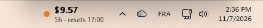
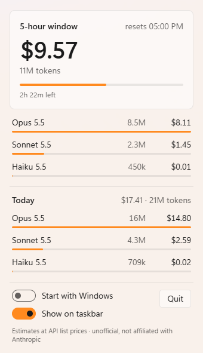

Juice
See what your Claude Code sessions burn, right on the Windows taskbar: tokens and estimated cost for the current 5-hour window and today.


Local only
Reads Claude Code's own session logs in ~/.claude/projects. No network, no account, no API key.
Live, not polled
Watches the log folder and updates within a second or two of each response. Idle, it sleeps.
Light
A Rust core of about 15 MB. The flyout's webview loads when you open it and is freed a minute after you close it.